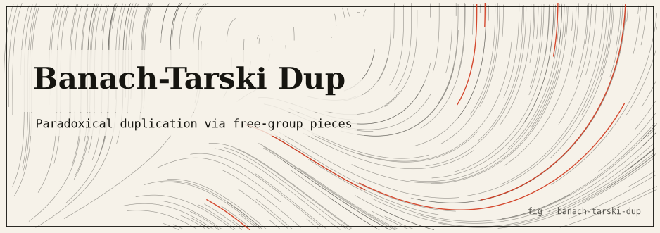

Banach–Tarski Duplicator
The combinatorial heart of the Banach–Tarski paradox on the free group F₂, constructively and exactly — no floating point, no physical matter, just word combinatorics.

The idea
The Banach–Tarski paradox is the most famous “impossible” result in modern mathematics: a solid ball in three-dimensional space (R³) can be cut into a finite number of pieces and, using only rigid motions — rotations and translations, no stretching — reassembled into two balls, each exactly the same size as the one you started with. One ball becomes two, out of nothing. It sounds like a magic trick or a violation of conservation of volume, and that reaction is precisely what makes it worth understanding.
The resolution is that the pieces are not ordinary shapes. They are non-measurable sets: infinitely intricate point-clouds that have no well-defined volume at all. If the pieces had volumes, those volumes would have to add up, and duplication would be impossible. Because they don’t, there is no arithmetic to contradict. The paradox is a statement about the limits of the concept of “volume,” not about physical matter.
Constructing those non-measurable pieces on the actual sphere requires the Axiom of Choice and is not something you can print to a terminal. But the combinatorial engine that drives the whole construction lives one level down, in the algebra of the free group F₂, and that part is completely explicit, finite to inspect, and exact. This project implements that engine in pure Rust.
What is a paradoxical decomposition?
The free group F₂ is generated by two symbols, a and b,
together with their inverses a⁻¹ and b⁻¹. Its
elements are all “reduced words” — finite strings of these four symbols with
no adjacent cancelling pair such as a a⁻¹. There are infinitely many
such words, and every element except the empty word begins with exactly one of the four
generators.
That single fact — every non-identity word has a unique first letter — is what
makes F₂ paradoxical. Split the group into four buckets by first letter:
S(a), S(a⁻¹), S(b), S(b⁻¹). Now do something that looks harmless:
left-multiply the bucket S(a⁻¹) by a. Multiplying by a
cancels the leading a⁻¹ of every word in that bucket, and the result
is every word that does not start with a — that is, S(a⁻¹)
∪ S(b) ∪ S(b⁻¹) plus the identity. So
S(a) ∪ a·S(a⁻¹) reconstitutes the whole group. The same works for the
b pair independently.
The upshot: from four disjoint pieces of one copy of F₂, you can rebuild two complete copies of F₂ using only left-multiplication (the group-theoretic analogue of a rigid motion). No element is created or destroyed — they are only relabelled by shifting a leading letter. This is the paradoxical decomposition, and it is entirely constructive.
How this project demonstrates it
The program never touches a sphere, real coordinates, or floating point. It represents each group element as a reduced word and implements the two operations the proof needs: reduction (cancelling adjacent inverse pairs) and left-multiplication by a generator. It then enumerates all words up to a bounded length and verifies, element by element, that S(a) ∪ a·S(a⁻¹) and S(b) ∪ b·S(b⁻¹) each cover the entire enumerated group with no overlaps.
Because everything is symbolic string manipulation over a finite enumeration, the result is exact and reproducible — there is no rounding error and nothing probabilistic. What you see confirmed in the output is the genuine algebraic heart of Banach–Tarski, isolated from the non-constructive machinery (orbits and the Axiom of Choice) needed to lift it onto a physical ball.
The mathematics
F₂ = free group with generators {a, a⁻¹, b, b⁻¹}
Partition F₂ into four sets by first letter:
S(a) = { words starting with a }
S(a⁻¹) = { words starting with a⁻¹ }
S(b) = { words starting with b }
S(b⁻¹) = { words starting with b⁻¹ }
Paradoxical decomposition:
F₂ = S(a) ∪ a·S(a⁻¹) (two copies of F₂ using S(a))
F₂ = S(b) ∪ b·S(b⁻¹) (two copies of F₂ using S(b))
Each subset has Lebesgue measure 0 when mapped to the sphere
→ the "duplication" is a measure-zero set trick, not magic
Run it
git clone https://github.com/caelum0x/awesome-mad-projects.git cd banach-tarski-dup cargo test cargo run # Output: verifying F₂ paradoxical decomposition... # S(a) ∪ a·S(a⁻¹) covers F₂: ✓ # S(b) ∪ b·S(b⁻¹) covers F₂: ✓ # Decomposition valid (word depth 8, 4096 elements checked)
Banach–Tarski questions
What is the Banach–Tarski paradox?
It is a theorem that a solid ball in three-dimensional space can be cut into finitely many pieces and reassembled, using only rotations and translations, into two balls each identical to the original. The pieces are non-measurable, so no rule about volume is actually violated.
Does this code physically duplicate a sphere?
No. It operates purely on the free group F₂, manipulating reduced words in the
generators a and b combinatorially. It demonstrates the algebraic
paradoxical decomposition that underlies the theorem — not real geometry, floating point,
or physical matter.
Why does the paradox require the Axiom of Choice?
Choice is needed to pick one representative from each of uncountably many orbits when the F₂ decomposition is transferred onto the sphere. That selection is exactly what produces non-measurable sets. Without the Axiom of Choice the sets would be measurable and the paradox would collapse.
Honest caveat: this project implements the combinatorial core of Banach–Tarski on the free group F₂ only — it manipulates words, not points of a real ball. The full geometric duplication additionally requires embedding F₂ as rotations of the sphere and invoking the Axiom of Choice to build non-measurable sets, which is inherently non-constructive and cannot be printed to a terminal. Nothing here creates matter or volume.